.
Ryse: Son of Rome
I worked as an intern lighting artist at Crytek on Ryse: Son of Rome from October 2012 to August 2013.
During the employment I was responsible for lighting the first mission: The Beginning and the last
mission: Son of Rome as well as the cinematics linked to those missions while following the art direction.
Additionally I did in-engine renders for some of the marketing material, worked on developing the lighting pipeline
with the other lighting artists and worked with the rendering engineers: giving feedback on the development of the
physicalized shading pipeline and lighting features for the project.
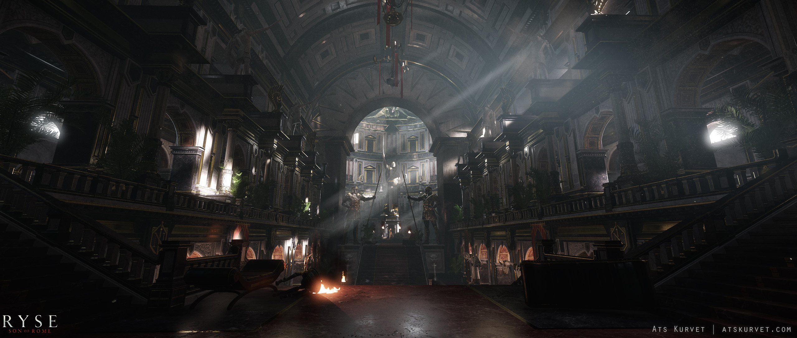
The Victory Hall inside Neros Palace in the first mission of the game.
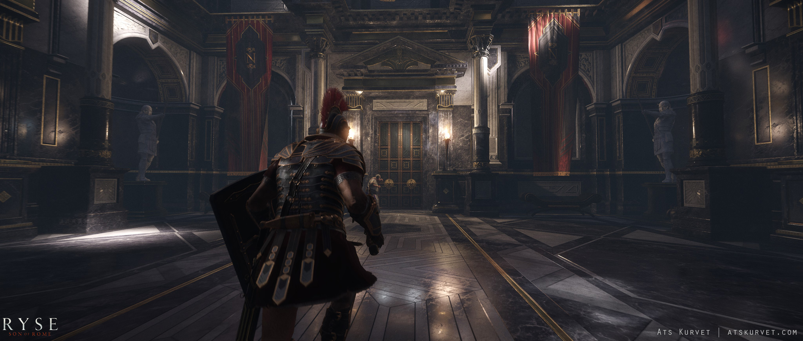
The interior of Neros Palace in the first mission of the game.
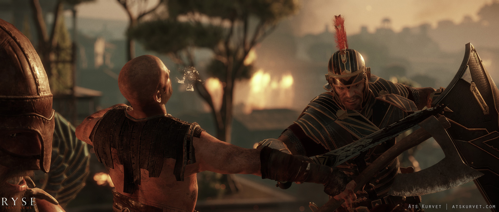
Combat in front of the Palace in the first mission
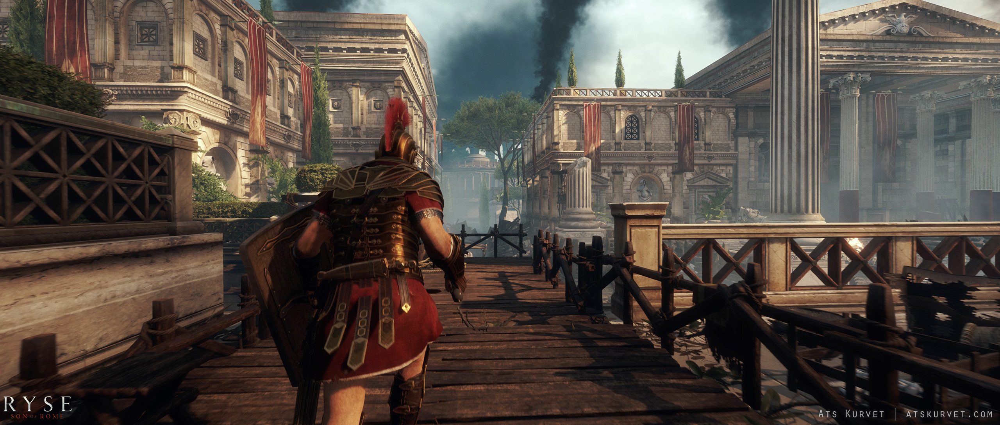
Forum area in the last mission.
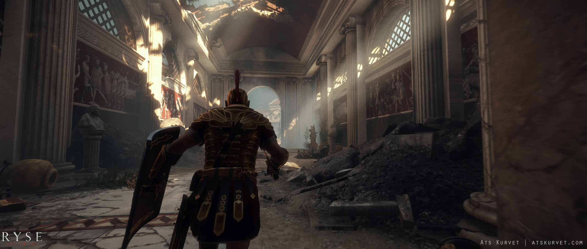
Entering the Riverside area in the last mission.
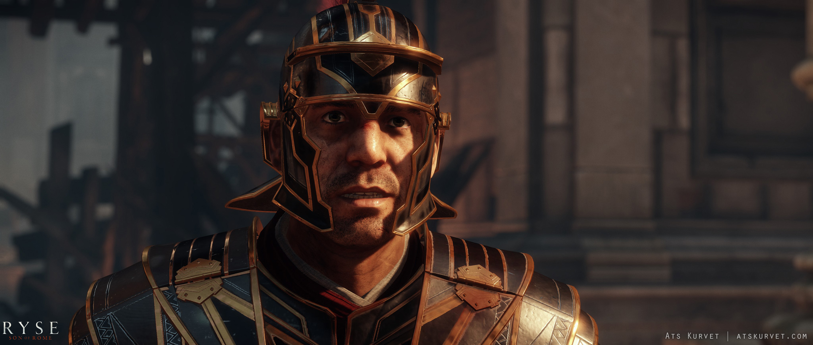
Cinematic in the last missions Forum area.
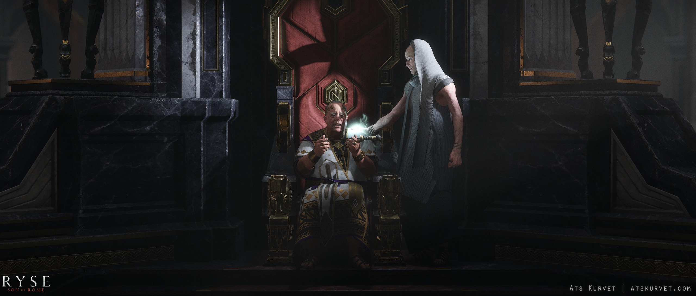
Cinematic in the Throne Room inside the Palace.
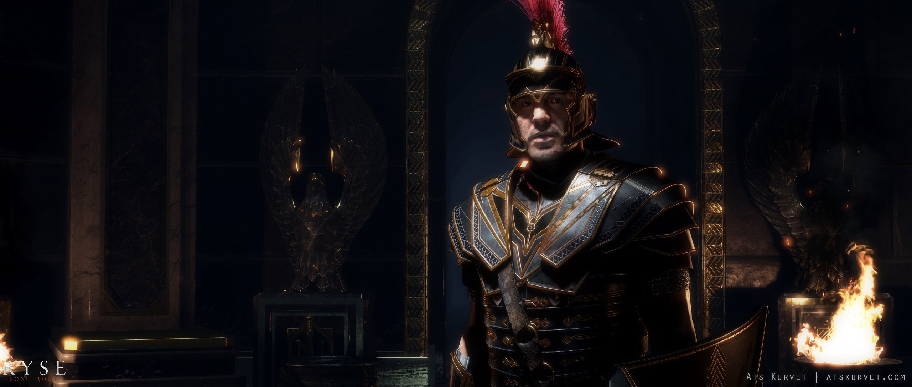
Cinematic inside Neros Panic Room.
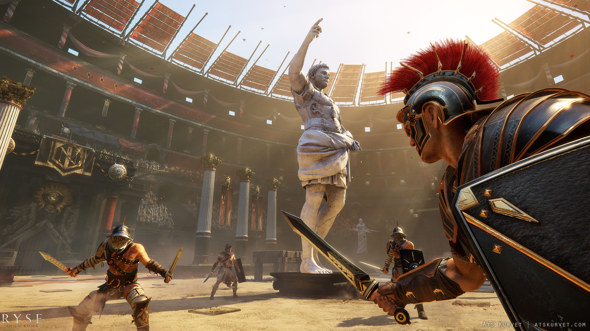
Marketing shot from the Colosseum.
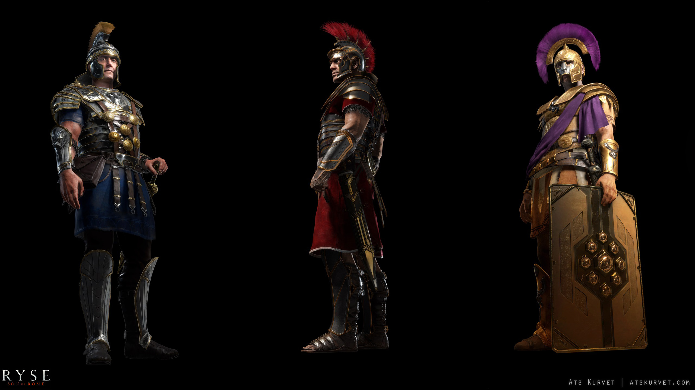
Character renders for marketing.
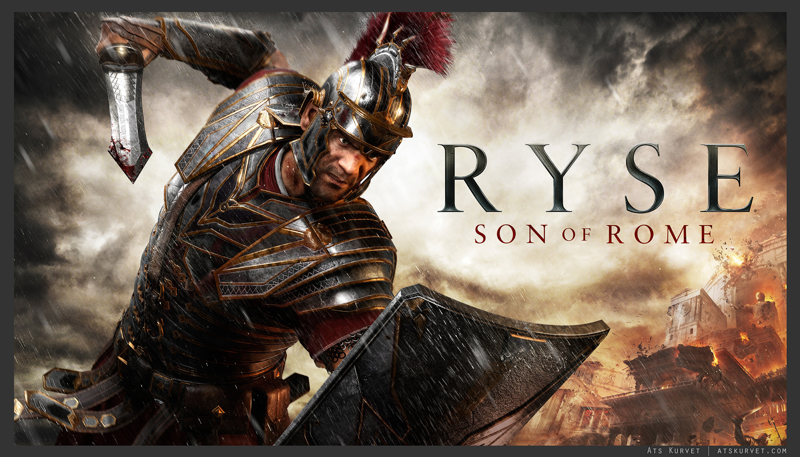
Key art shot for marketing. Post work on the in-engine render was done by Margaret Wuller.
Personal Work
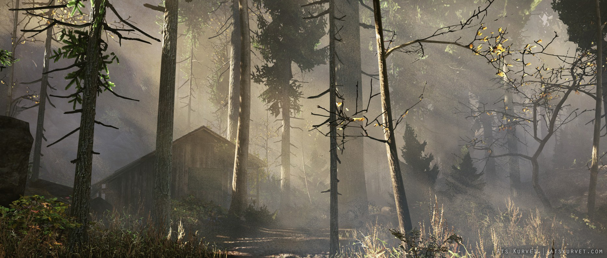
Personal project where I relit, partially redecorated and created and added additionl environmental
effects to the Forest level that came with the Cryengine Free SDK.
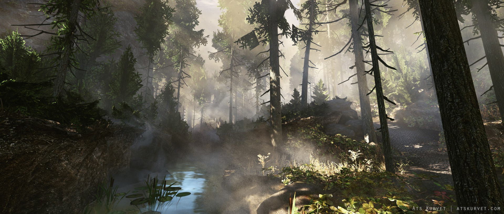
Personal project where I relit, partially redecorated and created and added additionl environmental
effects to the Forest level that came with the Cryengine Free SDK.